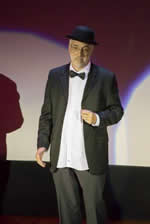

- Home |
- Blog |
- Lithography |
- Published Works |
- For Profit |
- About Chris
- | Gentleman
- | Scientist

Monterey, California, September 11-14, 2017
It has been eight years since I have been to Monterey to attend the Photomask Technology conference, commonly known as Bacus. The name Bacus comes from the group, the Bay Area Chrome User’s Society, that originally sponsored the conference before merging with SPIE. Fall in Monterey is a beautiful time to think about masks! And this year we have the added benefit of thinking about Extreme Ultraviolet Lithography (EUVL) as well. The EUVL Symposium has also decided cooperated with SPIE to host their conference and this year the two meetings have been collocated for the first time. The result is a great synergy that makes both conferences better and gave me the necessary excuse to come again.
The synergy seems to have worked, with 560 technical attendees and about 100 more attending just the equipment exhibit (significantly more people than the organizers had expected). I missed most of the first day of the photomask conference, but managed to notice how trendy the topic of machine learning has become. Unfortunately, this human didn’t learn enough to make much sense of the machine learning papers.
By Tuesday the EUVL conference had begun and I greatly enjoyed Greg McIntyre’s keynote talk on EUV readiness for manufacturing. He pointed out how lithography scaling is slowing significantly, but that “device cleverness” is taking up the slack. These one-time innovations (like reducing the number of wire tracks making up the height of a standard cell) are helping to keep density scaling on track. The hope, then, is that EUV will arrive and get lithography pitch scaling back up to speed. Greg also clearly identified stochastic yield loss (extremes of roughness) as the number one problem facing EUV lithography. When printing lines and spaces (or contact holes) is there a process window that enables no bridges and no breaks (no “missing or kissing” contact holes) at the same time? Some significant metrology innovations may be needed to answer this question.
Many speakers discussed the imminent availability of the 250W EUV light source from ASML. Word on the street (or at least the conference halls) says Samsung is getting this first 250W source on their first NXE:3400B scanner. It has already shipped is supposed by be up by the end of this year with first results in early 2018. Everyone will be waiting anxiously for those results, I am sure.
It is now clear that ASML is positioning the 3400 as the first EUV high-volume manufacturing (HVM) scanner. It looks like most of the NXE:3300 and 3350 tools will not be upgraded to higher source powers (many will stay at 80W) and will remain learning tools. The transition to a high power source is not an easy one.
Besides the ability to handle higher source powers, the 3400 has other improvements, most particularly the ability to use extreme off-axis illumination (out to sigma of 1) with half the pupil fill ratio (20%) of previous generation tools. This will allow k1 as low as 0.32 (down from 0.38 or so). Zeiss has shipped 12 of the 3400 optical systems to ASML to date.
Progress on EUV lithography as reported at the conference continues to be good, but none of the major risk factors have yet to be retired: sufficiently high source power to achieve good throughput, making and maintaining defect-free masks, and no yield loss due to stochastic effects in lithography.
Erik Hendrickx of imec gave an update on their efforts to identify new absorber materials for EUV masks. The current tantalum absorber requires a thickness of 55nm, resulting in tall structures with undesirable shadowing effects for tilted illumination. Absorbers like Nickle or Cobalt could shrink the thickness below 35nm. The problem is etching these materials, and more work is still required.
Heebom Kim of Samsung was optimistic about making defect-free masks. They have developed their own internal actinic mask inspection system that seems to have put Samsung ahead in EUV mask making. He claimed a current mask yield of 90%. They will also be getting the first EUV AIMS tool from Zeiss next year in order to qualify repairs with actinic light. But the combination of expensive inspection plus expensive repair verification plus expensive blanks will make EUV masks cost 8 times more than a 193 mask. Wow. I remember 15 years ago hearing promoters of EUVL saying that one of the big benefits of EUV will be cheaper masks compared to 193. Whenever I feel a need for a good laugh, I go back and look at those early cost projects (when an EUV scanner was going to cost $20M, for example).
The resist papers focused on understanding the exposure mechanisms of EUV resists, and on reducing roughness. Bits of progress were made on both fronts, but not nearly enough to reduce the risk of stochastic problems delaying or stopping the use of EUV in manufacturing. I’m not sure what a major breakthrough in roughness management will look like, but it won’t look like what we saw this week.
ASML’s one billion euro investment in Zeiss is showing tangible effects as construction has begun on new buildings for the manufacture of high-NA EUV optics. The NA=0.55 tool will be bigger than a freight train locomotive, and is essentially a two-story building. If you thought $140M was a lot for an NA=0.33 EUV scanner, imagine how expensive the new NA=0.55 tool will be. Then imagine higher.
On Thursday I skipped over to the photomask conference to hear about progress on multibeam tools for mask making. Both IMS and NuFlare are making 50KeV e-beam lithography tools with 512X512 beams. IMS has hit the market first and has already shipped many tools targeting the N7 node. NuFlare has a beta version of their tool installed at Samsung, and so is behind IMS. Their tool is spec’d for a higher resolution, however, and is geared toward the N5 node. The competition is encouraging and both companies are making great progress, enabling future mask making with improved specs and reasonable write times.
Vinayan Menon of imec gave an extremely refreshing talk – an unfiltered look at one year in the life of an EUV scanner. It wasn’t pretty. After installing an ~80W source on their 3300, imec faced a series of ugly trade-offs: either operate the source at near its full power and live with extremely low tool availability, or operate at a much lower power (below 30W) in order to keep the tool running and available. There was also a fairly significant reduction in source power over time that shows rate is not equal to actual power. Tool upgrades could help things, but those upgrades often took one or more months, so imec chose availability over peak performance. I found another point he made intriguing as well. A focus difference between the two chucks of the scanner was first detected as a systematic difference in linewidth roughness, suggesting that LWR might be a good focus monitor.
The closing remarks of the EUVL Symposium always include the results of a survey of the conference steering committee. The basic survey asks which potential roadblock for EUV success is most concerning. This year’s survey asked two questions: what is most concerning for initial HVM insertion, and what is most concerning for continued advances in EUV lithography beyond initial insertion. Interestingly, while the availability of a high-power source was considered the most pressing issue for initial HVM insertion, stochastic-induced variation was considered the number one issue for continued advances in EUV lithography.
Unfortunately I missed quite a few good papers at the conference. I was busy rehearsing. For many of the EUV crowd new to the Bacus conference, it was a surprise to discover that the conference banquet on Wednesday night was followed by an entertainment show put on by members of our community (three of the six cast members had papers at the conference). This 40 minute show is skit humor, replete with singing, dancing, and often a fair amount of silliness (if you can’t imagine what I’d look like in an elf costume, don’t try). I was very glad to be a part of the show this year after a 12-year hiatus. I hope the audience had half as much fun watching it as we did putting it on.
Photo credit: Bernd Geh
Chris Mack is a writer and lithographer in Austin, Texas.
© Copyright 2017, Chris Mack.
Diaries from other lithography conferences...